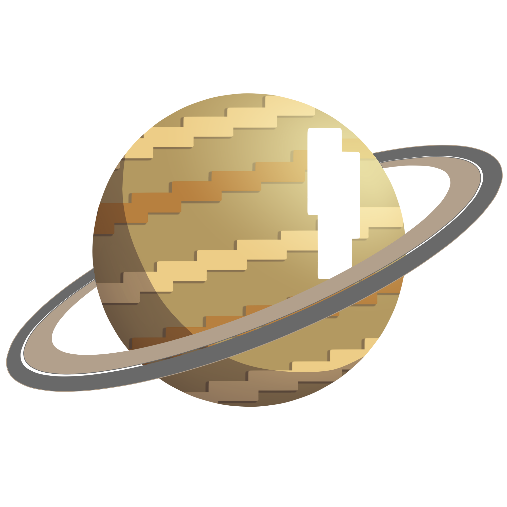
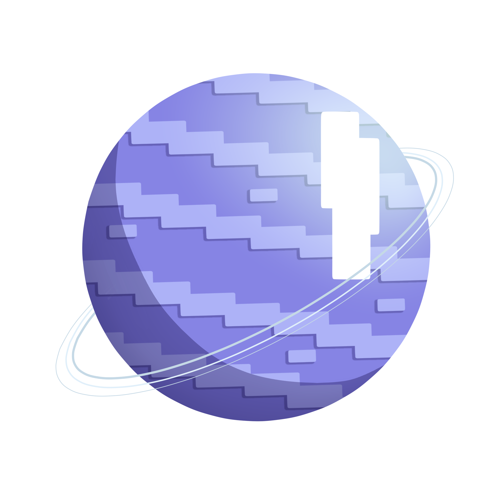
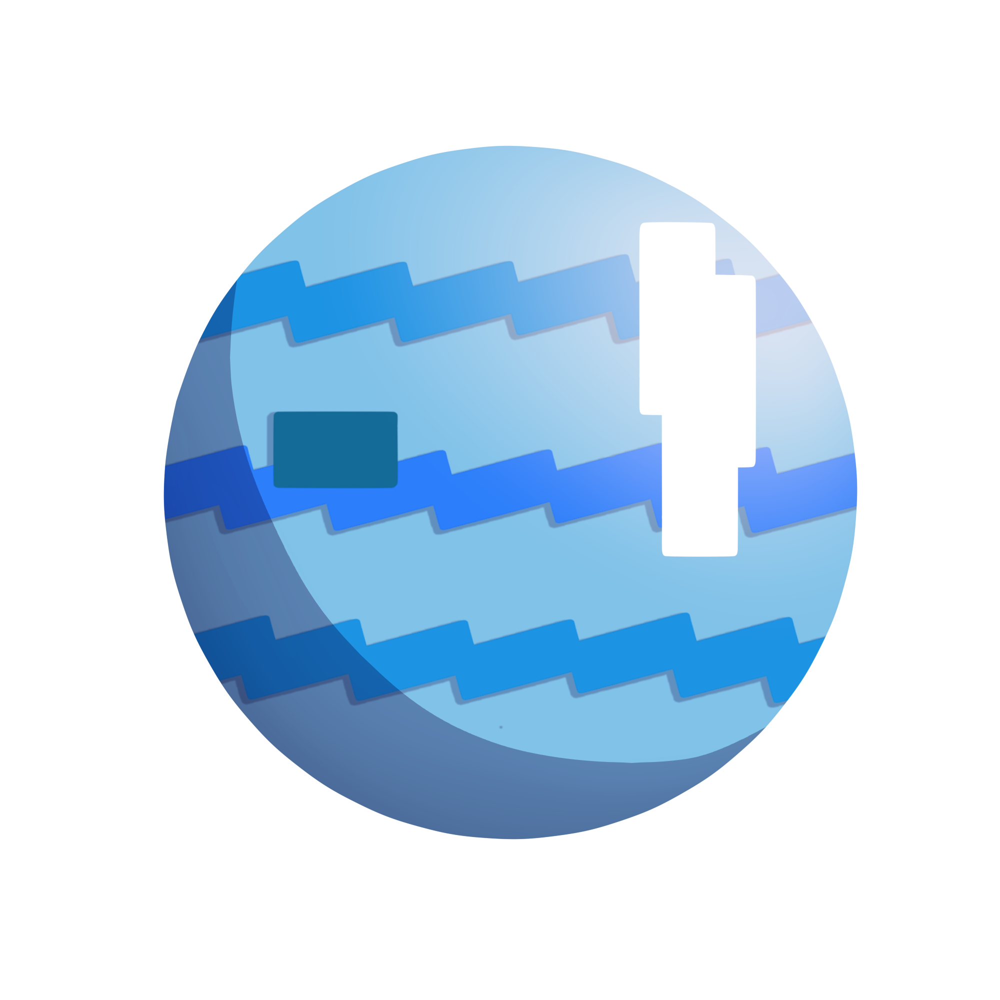
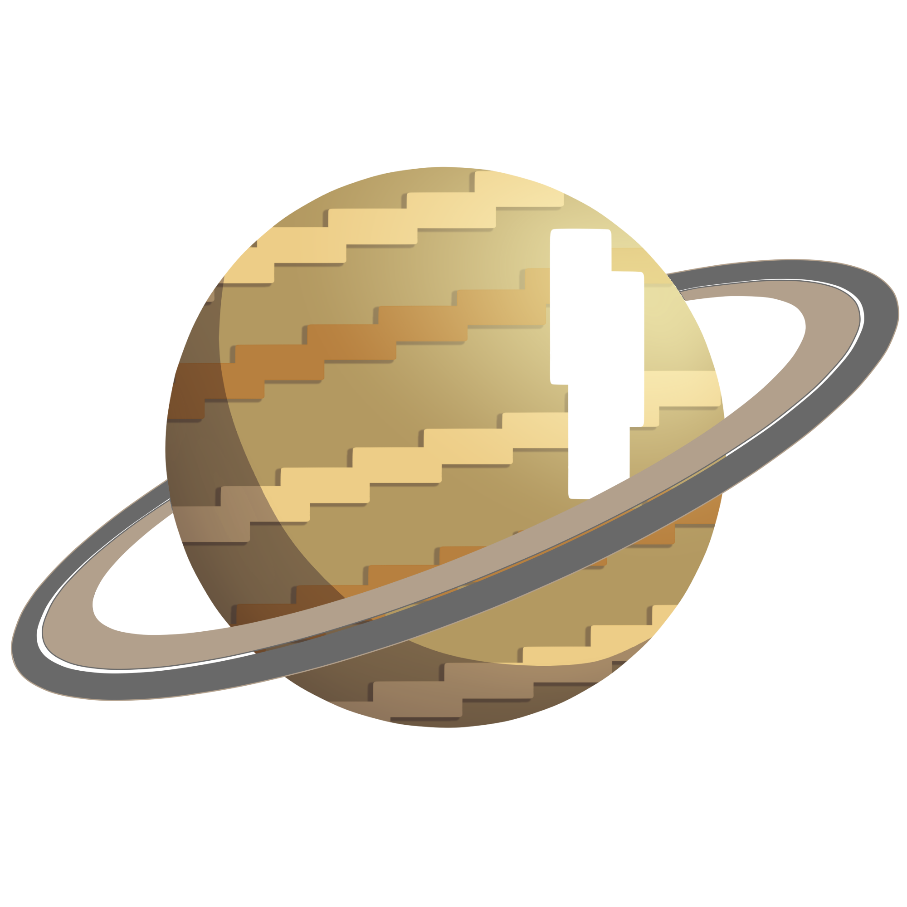
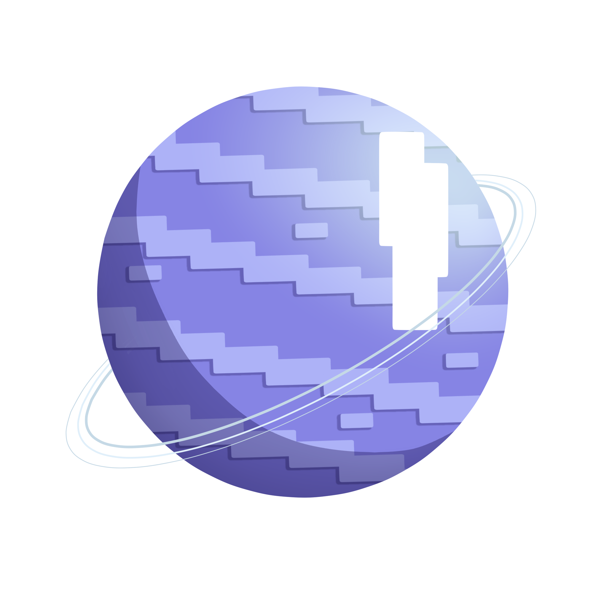
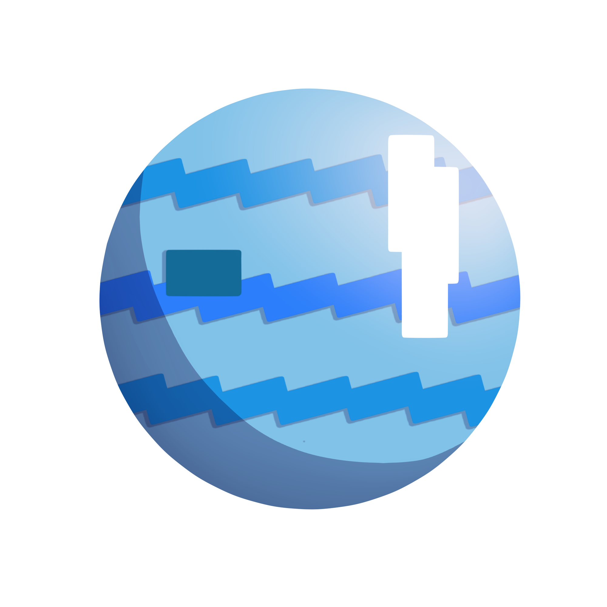

▶ O Sistema Solar é formado por oito planetas esféricos que orbitam o Sol, a principal estrela. Localizado na Via Láctea, uma das galáxias que compõem o Universo. O sol, ao seguir sua órbita no espaço, atrai os planetas que giram ao redor, enquanto os planetas atraem os seus respectivos satélites. Os astrônomos acreditam que nossa Via Láctea está no meio de um dos braços da galáxia, a 30 mil anos-luz do núcleo, a meio caminho entre a borda e o centro. Na ordem a baixo nossos planetas são Mercúrio, Vênus, Terra, Marte, Júpiter, Saturno, Urano e Netuno...